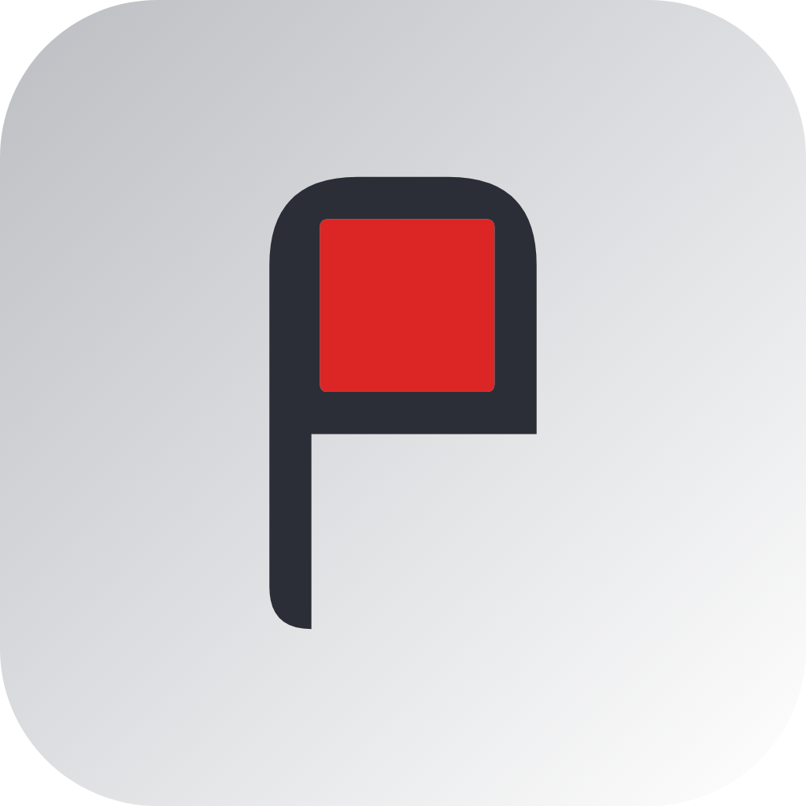

+
New Task
Task List
Timeline
Team
No project selected
Open a workspace with the folder button, then pick or create a project.
−
100%
+
−
100%
+
New project
Cancel
Create
New project
Name
Profile
Cancel
Create
Import as…
Name
Anchor the new timeline around:
Project start date
Project end date
A specific task
Date
Cancel
Create

Projector
Settings
Profiles
+ Add profile
Team members
+ Add member
Danger zone
Clear all & reset app
Forgets every workspace, profile and team and resets the app. Your project
.md
files stay on disk.
Done
Start meeting
Pick what to share. Anyone on that Wi-Fi can open it in a browser — read-only.
Cancel
Start sharing
Your computer will ask for permission
Back
Continue & start
Open this address in a browser on the same Wi-Fi:
Copy
Scan to open on a phone
Meeting PIN
Guests enter this PIN to view
Can’t connect? Approve the firewall prompt when sharing starts, and check that your Wi-Fi lets devices talk to each other.
Stop sharing
Done
Export to PDF
Choose which projects to include
Pages
Forecast page
A focused timeline of just the next
days, so the meeting can be about a specific window.
Team page
Each team member's tasks for the window, as a dated checklist.
Next
days.
Uses the same window as the forecast above.
Global timeline
A landscape, full-length timeline split into one-month pages, with the chosen window highlighted.
Past
Current month onward
Go back…
Include all past
months
Future
Through the last task
Next…
months
Paper size
Letter
A4
Save to
Choose…
Cancel
Export PDF
Edit task
Name
Project
Team member
Starts
On a date
After another task
Duration (days)
Start date
Starts after
Status
To Do
In Progress
Done
Critical
Milestone
Delete
Cancel
Save